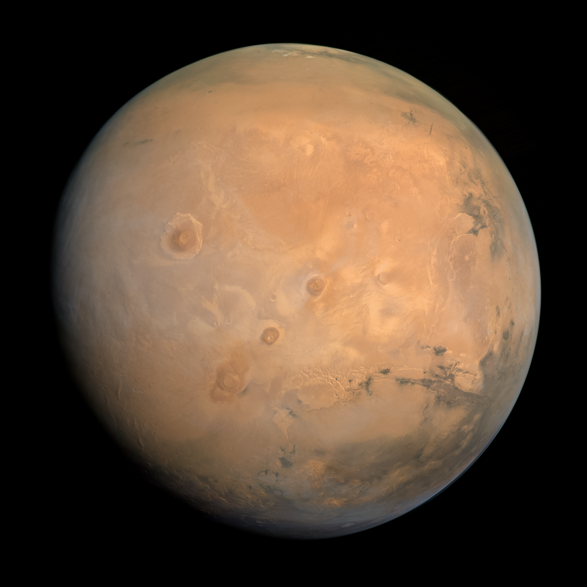
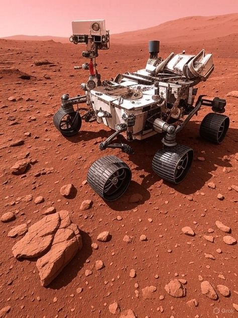
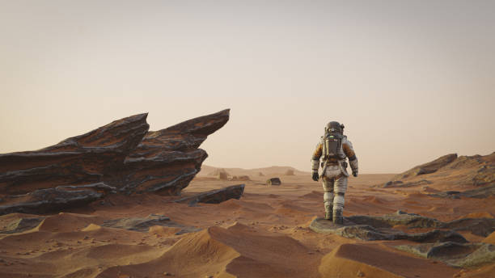

"Plant it and take care of it," the instructions said. Tilly had never grown anything before. She planted the seed in a little dome of Martian soil, gave it water, and played soft music for it every evening — because she had read that plants like company. For many days, nothing happened. Tilly checked the soil, adjusted the warm lamps, and waited patiently under the dusty pink sky. Then one morning, a tiny green sprout pushed its way up through the red dirt. Tilly's sensors blinked with something that felt a lot like joy. It was the first green thing ever to grow on Mars. She took a photo and sent it to Earth. Millions of people saw it — a little sprout on a big red planet — and many of them smiled. The sprout grew into a small tomato plant, and inside its little dome, Tilly learned that even in the loneliest place in the universe, life finds a way — especially when someone cares enough to water it. The end. 🌱
